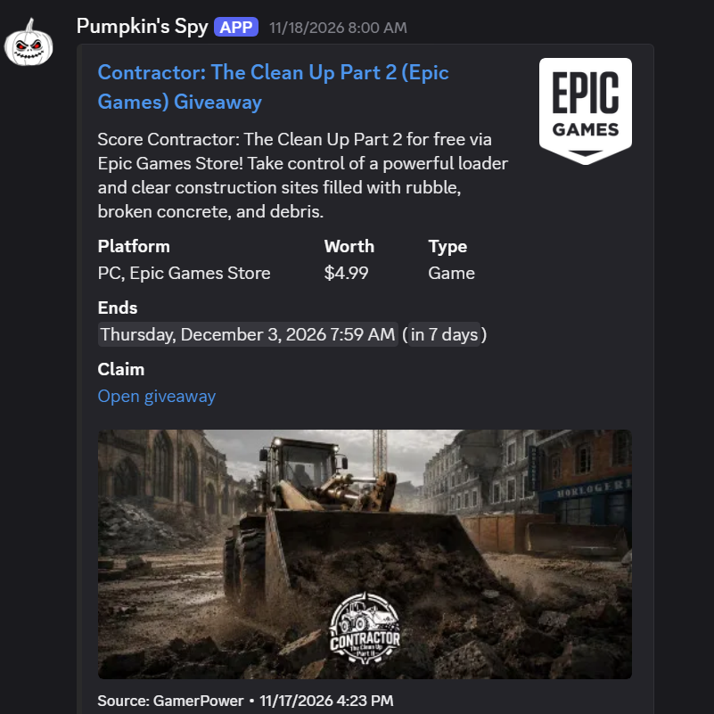
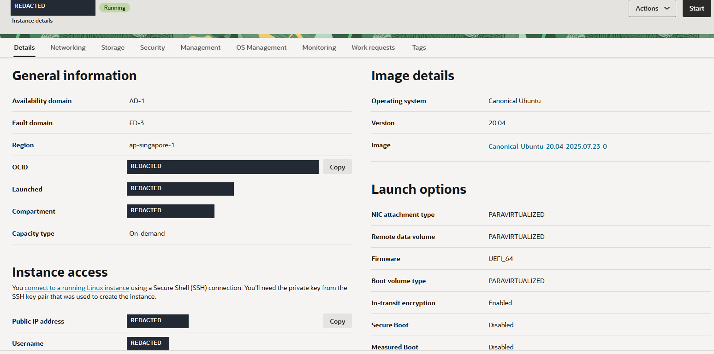

Scheduled discovery
A daily cron job runs at 8 AM Asia/Shanghai (UTC+8), filters the API by supported stores, and checks for new games.
COMMUNITY AUTOMATION / DISCORD BOT
Free game giveaway notifications, automated for my Discord community.
OVERVIEW
I built this bot to save community members from repeatedly checking game storefronts for limited-time promotions. It retrieves current game giveaways from GamerPower, identifies new offers, and publishes formatted notifications directly in Discord.
A daily cron job runs at 8 AM Asia/Shanghai (UTC+8), filters the API by supported stores, and checks for new games.
Previously seen giveaway IDs are recorded in a JSON file to avoid reposting known offers across normal restarts.
Embeds display the title, description, artwork, platform, original price, expiration countdown, and claim link when available.
Community users can request an immediate check or display available commands without waiting for the daily schedule.
ARCHITECTURE
The bot saves giveaway IDs after processing. Its history file must be preserved when replacing a Docker container to retain deduplication state.
OUTPUT DEMONSTRATION

The output uses Discord embeds and store-specific thumbnails to make different offers easy to identify. Expiration times are converted into native Discord timestamps so users can see the local deadline and relative countdown.
When no fresh giveaways are found during the scheduled check, the bot stays silent to avoid unnecessary channel noise.
IMPLEMENTATION
The Dockerfile uses Node.js 20 Alpine and installs production dependencies. The project is designed to run as a self-hosted service on cloud infrastructure.
Configuration is supplied through environment variables, API and posting errors are logged, missing store images are handled gracefully, and posts are spaced by 800 ms.
!freegames checkFetch and post new giveaways in the current channel.!freegames helpDisplay available commands and the schedule.CLOUD HOSTING
Pumpkin's Spy runs inside a Docker container on my personal Oracle Cloud Infrastructure (OCI) Free Tier compute instance in the Singapore region. The host runs Canonical Ubuntu 20.04 LTS, while the bot container uses Node.js 20 on Alpine Linux. Hosting the bot in the cloud allows scheduled notifications to run independently of my personal computer.
Deployed using Free Tier compute resources rather than a dedicated paid server.
I use the OCI console to monitor instance health and resource utilization, including CPU, memory, and disk I/O.
DEPLOYMENT EVIDENCE

REMOTE ADMINISTRATION
I connect to my Ubuntu compute instance from Windows Command Prompt using SSH key-based authentication to manage the cloud host and its Docker services.
LEARNING OUTCOMES
This project demonstrates how a small, containerized automation can turn public API data into useful community notifications using a cost-conscious cloud deployment.